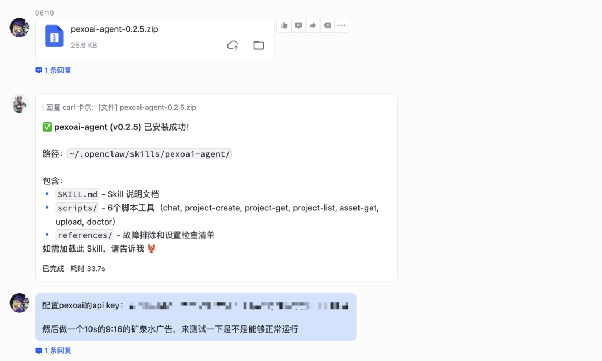
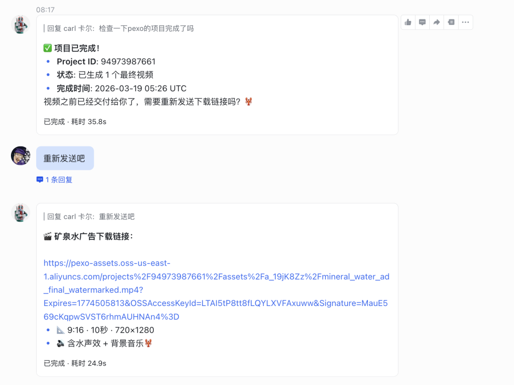
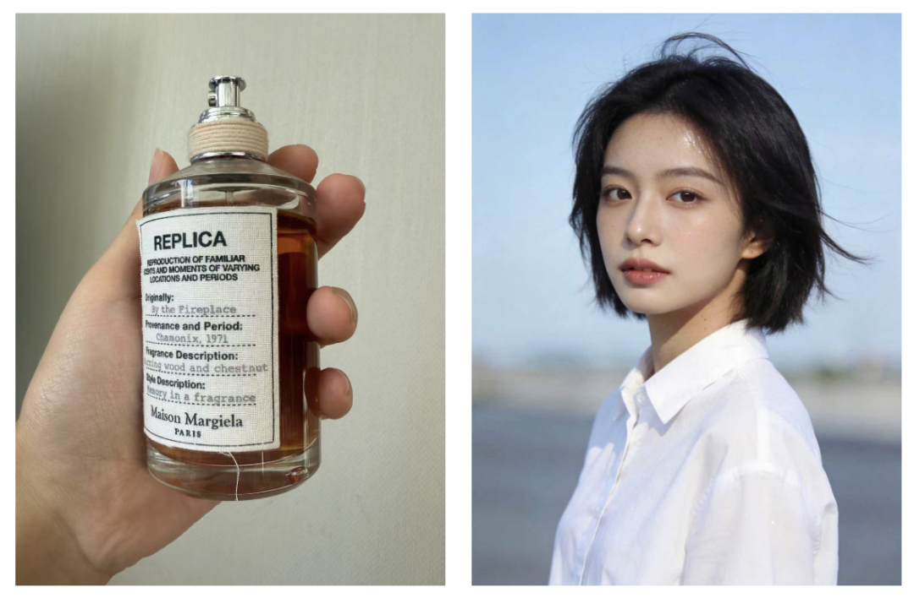
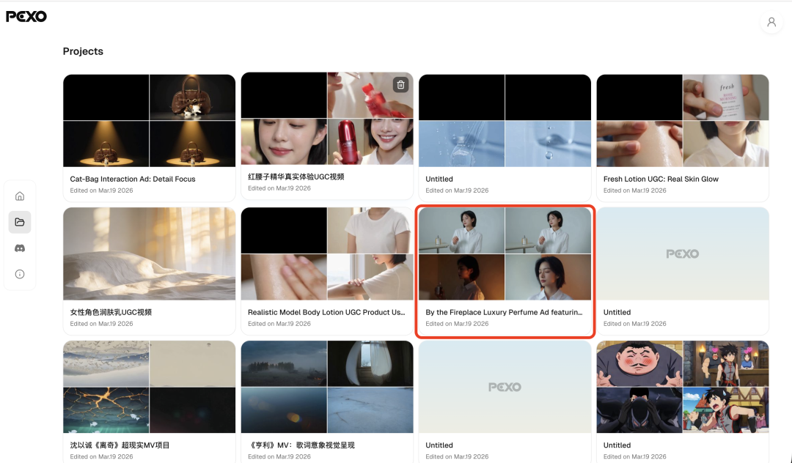
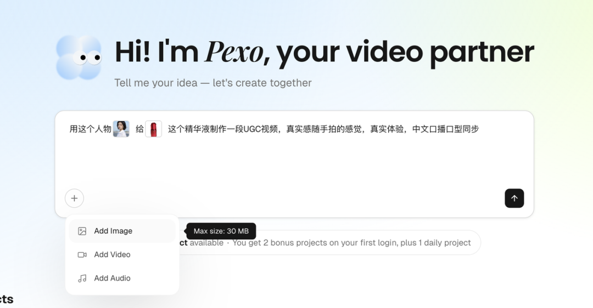
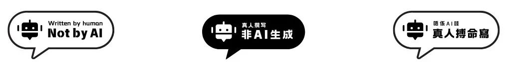

如果说有什么样格式的数据是我最近用OpenClaw会头疼的，
现阶段一定是视频，不管是视频剪辑，视频总结，视频生成，给视频加字幕都要消耗大量的Token。接入的Skills设定不够好的话，真不如我回到视频Agent们上做。
视频生成这块更是拉完了，
Clawhub上的配置大部份都是把视频模型的API封装成Skill，或者像是if else工作流一样，把脚本生成，图片生成，视频生成分别前后交给不同的模型完成，最后拼接在一起。
感觉一下子给我干回到视频Agent出现前的蛮荒时代了。
长话短说，前Vidu团队的成员出来做了一个新的视频Agent，叫Pexo。
这是一个你不需要懂怎么写提示词的Agent，只要跟它聊天，就能得到自己想要的视频，而且它现在就可以在OpenClaw里用了。
所以，这次我跟Pexo一拍即合，挖到了5个OpenClaw做视频的使用场景，包括了产品广告，UGC视频，品牌宣传片，动漫短剧和音乐MV。

Pexo已经上线了ClawHub，所以安装过程非常简单。我直接在飞书的对话框里，把从ClawHub上下载的ZIP文件发给我的OpenClaw，它就自动完成了安装。然后，去Pexo的官网注册个账号，在设置里找到API Key，再把这个Key发给OpenClaw，整个配置就完成了。
这时候就可以把提示语发给OpenClaw干活了。
目前来说，单次可以生成最长两分钟的视频，支持的视频尺寸包括16:9，9:16和1:1，生成完成后，飞书会直接返给你一个视频的下载链接。

甚至还可以输入多图片让Pexo生成一个tvc，比如说，我这里给了它一张人物图片和我随手拍的香水图片，我其实都没有给它很复杂的提示，就是非常简单的告诉它，做一支广告片，

然后我们就能得到这样的一组视频，包括视频基调，分镜，音乐，镜头逻辑，这些它都是给我策划好了。
它能够识别出来我这款香水是壁炉火光的香型，然后根据壁炉火光这个主题做出相应的视觉元素，人物的动态也处理得非常自然，说明是接了有世界知识的模型的。
如果对这个视频不是很满意的话，除了可以在飞书里继续跟它对话修改，还可以直接回到Pexo的网页端，找到这次生成任务的完整记录，然后对视频进行更精细的调整。

比如，我还是沿用上面的这个人物，同时给它配上一张精华液的图片，让他给我做出一个这个人物使用该精华液的 UGC 视频，Pexo 上同样支持上传图片、视频和音频进行辅助创作。

在生成过程中，它会向我们询问不同的视频风格，视频时长以及分镜设计。
在我们一一确认的过程中，我们可以随时进行即时调整。只有在全部确认之后，它才开始进行生成，这样得到的视频会更加接近我们心里想要的风格。
而且在生成视频之后，可以跟它对话进行修改。甚至还可以把视频放大点开，选择多个时间点，用画笔去标记出想修改的部分。比如，我希望这个产品能更加清晰一点，或者想让面部的镜头更加特写一点，我就分别在相应的时间点进行标记和备注，直接应用就能得到相应的修改视频。
我把中间需要修改的部分对比截图下来，大家可以看一下，画面定位都很准确，也能够做出跟我要求一致的修改。
而且我实测下来，Pexo 擅长的视频类型还蛮多的，一句话就能做出效果不错的视频。
比如我这里给了一张我家小猫的照片和一支MiuMiu的图片，做了一个很有反差萌的品牌广告。
或者，我干脆就直接跟它聊天，让它给我做一段叫《重生至异世界，我的魅力值拉满》的搞笑动漫短剧。整个剧情都是它自己设计的，生成出来的动漫人物，反应和表情都特别自然，看得我嘎嘎直乐。
最后，我还拿了一首我自己之前做的AI音乐，直接把音频文件丢给了它，让它根据这首歌的风格，去制作一段MV。它能准确地识别出歌曲的歌词和情绪氛围，然后生成与之匹配的画面。
整个体验下来，我发现Pexo越用越好用，因为它拥有完整的对话上下文和创作记忆。
你的视频偏好，你确认过的风格，你调整过的方向，它都会记住。你不需要每次都重新跟它解释一遍你的审美和需求。聊得越多，它就越懂你，创作效率也越高。
对于不会剪辑或者是没有创作思路的小白来说，
Pexo 是一个非常方便的工具。因为它给我们交付的不是一段一段的视频素材，而是一个已经剪辑好、搭配好的完整视频。
整个过程中，你不需要去思考哪一个模型擅长什么、哪一个模型能够帮我做到什么，或者我需要调用哪一个模型才能够实现我想要的效果。
这些Pexo都帮我们做了，
它在根据我们提出的需求时，就已经判断了生成这些画面需要用到什么样的模型更加合适。
作为一个初代版本来说，现在能够做到这个程度，是我觉得还比较惊喜的。
这几周，
我几乎所有的时间，
都在围着这些数字龙虾转圈。
OpenClaw介入后，AI的创作形式也在大改。
原本要跳转到不同的平台完成的创作任务，
都被容纳到了一个统一的对话入口里。
这也可能就是未来一人创作的基本框架了。
你所有的习惯，所有的想法，
都只需要在一个对话框里表达。
它能无限地记住你的偏好，
然后用最快的速度，
做出你想要的。
@ 作者 / 阿汤 & 卡尔
最后，感谢你看到这里👏如果喜欢这篇文章，不妨顺手给我们点赞｜在看｜转发｜评论 📣
如果想要第一时间收到推送，不妨给我个星标🌟
如果你有更有趣的玩法，欢迎在评论区聊聊🤝
更多的内容正在不断填坑中……
